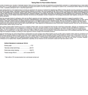

Explore
Water Testing
Project
Create
Upload
Discussions
6
Tasks
4
Search history
5
Collections
3
Archive
26
Participants
5
Sort by
Expand all
Water Testing's Archive
Share + add
Enumeration and identification of heterotrophic bacteria in groundwater and in a mountain stream
Link
Identification and Control of Bacteria Sources: Lessons Learned from the Los Angeles River Watershed
PDF
Fecal Indicator Bacteria Reduction in Urban Runoff:
Link
Chapter 5: Analytical methods for the ... pathogenic mycobacteria
eBook – Pages 55-73
Microbes in Water
YouTube
Detection of pathogenic organisms in food, water, and body fluids
PPT
Development of a DNA microarray for detection ... ten other pathogens in drinking water
Journal article
Waterborne Pathogens: Bacteria
PPT
Culturable and non-culturable fractions of bacterial populations in sediments of a South Carolina stream
Journal article
An analysis of wilderness water in ... parks for coliform and pathologic bacteria
Journal article
Occurrence of fecal-indicator bacteria and ... Brandywine Creek, Chester County, Pennsylvania
PDF
Identification of Fecal Input Sites in Spring Water by Selection and Genotyping of Multiresistant Escherichia coli
Journal article
Feasibility of fast-response testing for coliform bacteria in distribution systems
PDF
Chapter 8: Detection, enumeration and identification ... microorganisms of public health significance
eBook – Page 13
Microbial indicators of water quality
AVI
Fast detection and identification of bacteria in potable water
PDF
Antibiotic Resistance of Gram-Negative Bacteria in Rivers, United States
Link
Testing Well Water for Microorganisms
YouTube
Problem organisms in water
eBook
Application of Artificial Neural Network for the Identification of Fresh Water Bacteria
PPT
Testing Water for Fecal Coliform Bacteria
Link

Intelligent sensor based on ... used for water quality estimation
PPT
Culture-based techniques for ... of pathogens in environmental samples
SlideServe
5.11 Fecal Bacteria
Link
Tutorials
Research skills
Selecting the Appropriate Database for Research
Developing a Search Strategy
Citations/bibliographies
Creating an EndNote Library/Adding References to EndNote
Creating an Annotated Bibliography with EndNote
Papers
Avoiding Plagiarism - Citing Sources
Writing a paper
Video
Video editing
Resources & equipment for Creating a Video
Further skills
Using Wordpress to Create a Project Website
Presentation skills
Share with
Add to
96
My archive
New collection
Create
0
Research on water testing
6
Data analysis
2
Videos
27
Photos
Add